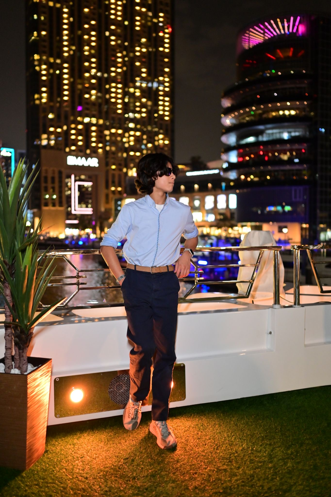

INSTAGRAM
INSTAGRAM
 LINKEDIN
LINKEDIN

I'm Dax Tekchandani, a UK-based photographer, focused on capturing landscapes, travel scenes, and the history of forgotten places.
My work centres around scale, light, and atmosphere. I aim to capture minimalism within my compositions, using simplicity, a general a lack of people, and natural lighting to create images with intentional mood and tell parts of a story.
Through this EPQ project website, I've explored how technical decisions such as whitespace, composition, and colour pallettes can be used to properly display my work and create an engaging user experience. I hope you enjoy browsing my portfolio!